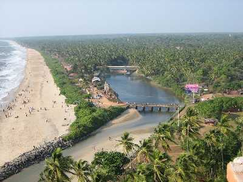
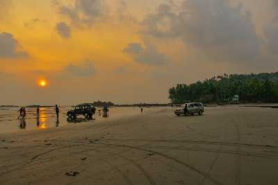

Payyabalam beach
The impeccably unspoilt Payyabalam beach is adorned with sparkling pearls of golden sand and foamy white waves of the Arabian Sea.

Muzzhapilangad Beach
The Muzzhapilangad Drive-in Beach at Kannur is one referred to with many superlatives- as the longest drive-in beach in the whole of Indikr
St Angelo's Fort
St Angelo's Fort is definitely one of the most popular and frequently visited attractions of Kannur and for more reasons than one.

Kannur Lighthouse
Being Kerala's first lighthouse ever and Kannur's only one, the Kannur Lighthouse is a pretty big deal. This cylindrical concrete tower has a balcony with a light that is lit as the evening breaks in to alert the seamen of the land.